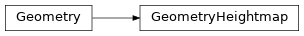
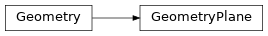
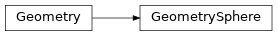

geometry
Interface and implementation of geometries.
Subpackages
Package Contents
Classes
Geometry describing part of a rigid body shape. |
|
Box geometry. |
|
A heightmap geometry. |
|
A flat plane geometry. |
|
Box geometry. |
- class Geometry
Geometry describing part of a rigid body shape.
- pose: simulation.scene._pose.Pose
Pose of the geometry.
- mass: float
Mass of the geometry.
This the absolute mass, irrespective of the size of the bounding box.
- texture: simulation.scene.geometry.textures.Texture
Texture when rendering this geometry.
- class GeometryBox
Bases:
simulation.scene.geometry._geometry.Geometry
Box geometry.
- aabb: simulation.scene._aabb.AABB
AABB describing the box’s bounding box.
- class GeometryHeightmap
Bases:
simulation.scene.geometry._geometry.GeometryA heightmap geometry.
Similarly to the Plane geometry, x and y of size define the space the heighmap encompasses. The z-coordinate defines the height of a heightmap edge when it’s value is maximum. heights defines the edge of the heighmap. Values much lie between 0.0 and 1.0, inclusive. base_thickness defines the thickness of the box below the heighmap, which is requires for proper collision detection in some simulators.
- size: pyrr.Vector3
- base_thickness: float
- heights: numpy.typing.NDArray[numpy.float_]
- class GeometryPlane
Bases:
simulation.scene.geometry._geometry.GeometryA flat plane geometry.
- class GeometrySphere
Bases:
simulation.scene.geometry._geometry.GeometryBox geometry.
- radius: float
The radius of the sphere.